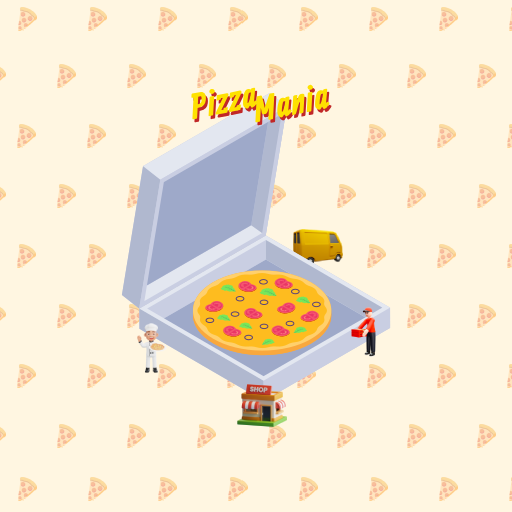

Pizza Mania and the Best Clicker Games to Play Online
If you love clicker games, get ready to dive into one of the most exciting and rewarding experiences with Pizza Mania! Click your way to the top, bake more pizzas, unlock exciting rewards, and build a global pizza empire. Whether you're looking for a clicker game online, a fun idle experience, or a browser-based game, Pizza Mania is the perfect choice.
What is a Clicker Game?
A clicker game, also known as an idle game, is a game where players repeatedly click to progress. Over time, automation takes over, letting you continue earning even when not actively playing. Pizza Mania takes this concept to the next level, allowing you to create the ultimate pizza empire!
Why Pizza Mania is the Best Clicker Game?
- Endless Fun - Click to bake pizzas, expand your business, and dominate the world.
- Unlock Rewards - The more you click, the more you earn, unlocking new upgrades and bonuses.
- Strategic Gameplay - Balance automation and manual clicking to maximize your profits.
- Compete & Grow - Build a pizza empire that spans the globe.
Top Clicker Games to Try
1. Pizza Mania
The ultimate clicker game for pizza lovers! In Pizza Mania, you start with a small pizza shop and work your way up to owning a global pizza empire. The more you click, the more pizzas you bake, unlocking new toppings, better ovens, and faster production. Play now and see if you can dominate the world with your delicious pizzas!
2. Cookie Clicker
A classic in the clicker genre, Cookie Clicker lets you bake cookies endlessly and upgrade your production.
3. Clicker Heroes
An idle RPG experience where you battle monsters, upgrade heroes, and progress through levels.
4. Planet Clicker
Expand your reach beyond Earth by generating energy to explore and conquer planets.
Where to Play Clicker Games?
If you’re looking for a clicker game browser experience, many games are available online for free. Some of the best platforms include:
- Kongregate - A hub for idle games and classic clicker titles.
- Steam - Offers a variety of clicker games PC players can enjoy.
- Mobile App Stores - Search for clicker game mobile on iOS or Android.
How to Make Your Own Clicker Game
Interested in creating your own clicker game? Several tools allow you to design and develop games easily:
- Clicker Game Maker - Online platforms help beginners build games without coding.
- Unity & Godot - Game engines for more advanced developers.
Final Thoughts
Whether you’re searching for a clicker game free to play, looking for idle game 2024 recommendations, or exploring unblocked clicker games at school, there’s a world of fun waiting for you. Start by playing Pizza Mania and see if you can build the biggest pizza empire!